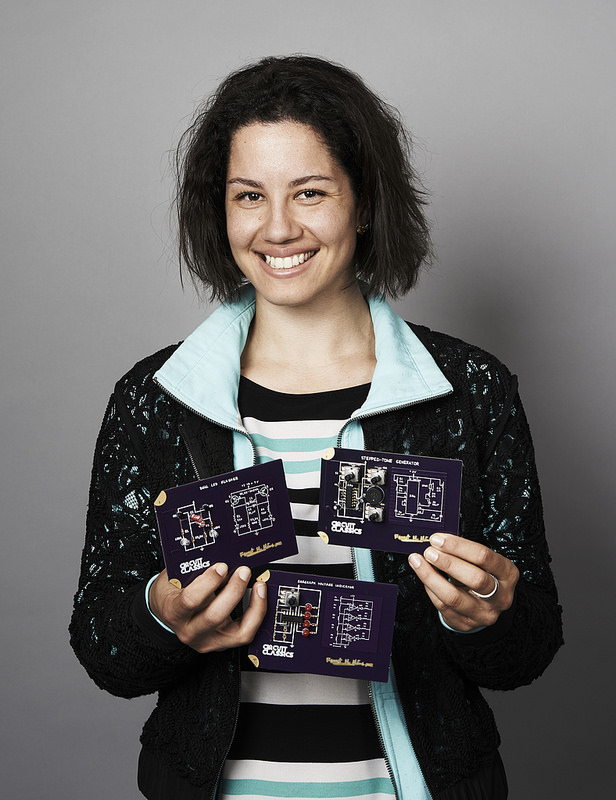

Exquisite printed circuit boards that bring to life Forrest Mims' vintage designs from "Getting Started in Electronics".

About
Forrest M. Mims III is a trusted name in the electronics world for good reason: his charming and engaging texts have drawn millions of people into the world of electronics for the first time. I am bringing some of those hand-drawn circuits projects to life by creating an exquisitely designed series of finely crafted and highly detailed boards. These are the Circuit Classics. They make a great gift for a first-time learner, an expert tinkerer, or even just as a fun conversation piece for your desk.
— Star Simpson
Contributing
This website is licensed under FIXME and maintained as a Git repository. Contributions are encouraged! Please feel free to make a pull request on GitHub or simply contact FIXME@example.com.